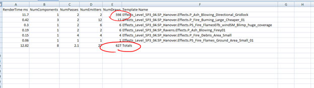

UDN
Search public documentation:
VFXOptimizationSplitScreen
日本語訳
中国翻译
한국어
Interested in the Unreal Engine?
Visit the Unreal Technology site.
Looking for jobs and company info?
Check out the Epic games site.
Questions about support via UDN?
Contact the UDN Staff
中国翻译
한국어
Interested in the Unreal Engine?
Visit the Unreal Technology site.
Looking for jobs and company info?
Check out the Epic games site.
Questions about support via UDN?
Contact the UDN Staff
UE3 Home > Particles & Effects > Particles Systems > VFX Optimization in UE3 > VFX Optimization: Split Screen
UE3 Home > FX Artists > VFX Optimization in UE3 > VFX Optimization: Split Screen
UE3 Home > FX Artists > VFX Optimization in UE3 > VFX Optimization: Split Screen
VFX Optimization: Split Screen
Detail Mode Overview
Commands
debugCreatePlayer1
If you only have 1 controller use the command ssswapControllers to jump between Players.
Enable the splitscreen overlay using the command STAT SPLITSCREEN
For particle effects, reference the Particle Draw Calls section, keeping an eye on the MeshParticles section which is where greatest gains can be made quickly by setting the MediumDetailSpawnRateScale.
View drawCalls for a given area using the command DumpParticleFrameRenderingStats
This command dumps a spreadsheet and a screenshot of where the action took place. If the STAT SPLITSCREEN command is enabled a readout of Draw Calls when the shot was taken will be visible. This screenshot is an estimation since it is taken after the data is dumped and is more of a visual reference.
Viewing the stats in the spreadsheet is straight forward, the spreadsheet should look something like this.

In this case the fix is pretty straight fwd, we have one effect that must call a bunch of meshes and they loop spawn most likely. This can be tricky however, because if 1 effect is the primary culprit, and you wish to keep the effects current visuals there is only one option, convert the meshes to sprites.
If however the emitter is not necessary for splitscreen, set the mediumDetailSpawn rate to 0.00.
Spread Sheet stat columns are named with appropriate descriptions:
- RenderTime ms
- how many ms it takes to render the effect
- NumComponents
- how many instances of the particle system are in view and active
- NumPasses
- how many passes are in the material being called by the emitter
- NumEmitters
- how many emitters are in the particle system
- NumDraws
- the accumulated number of draw calls for all instances of the particle system